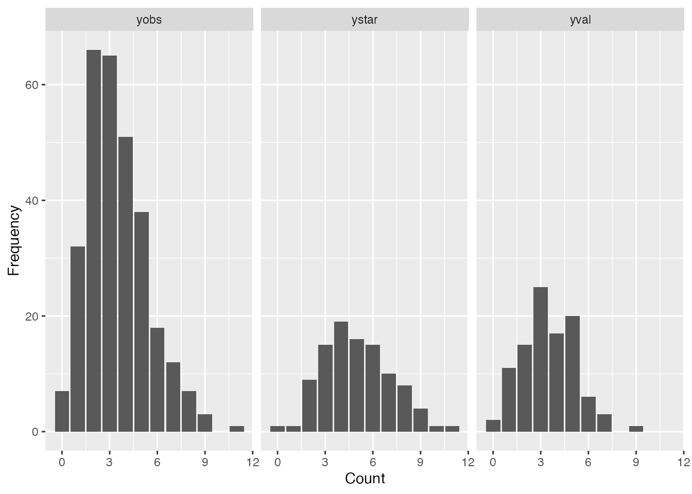
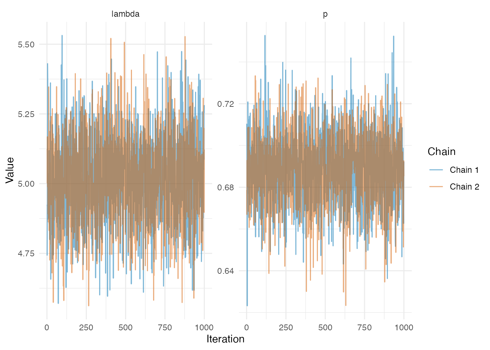
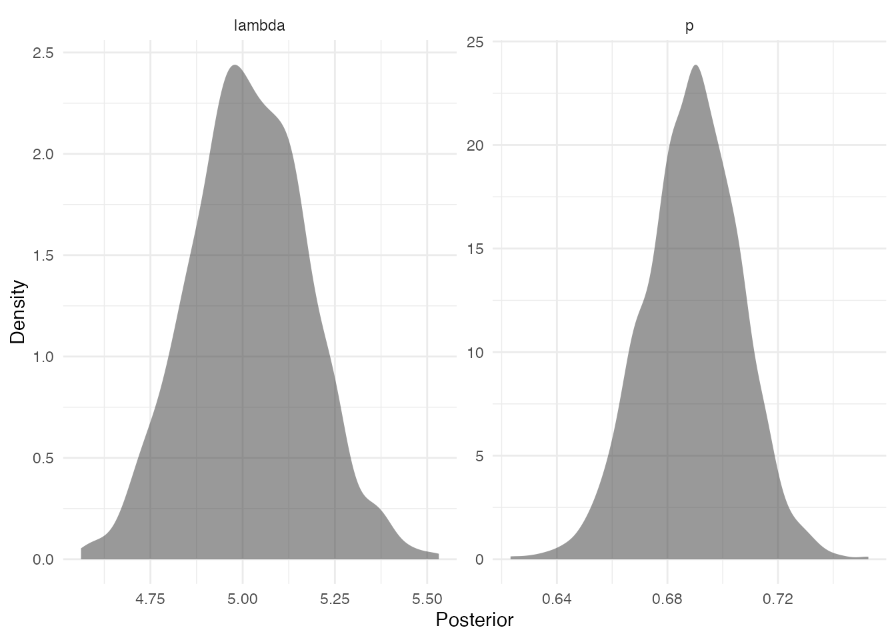
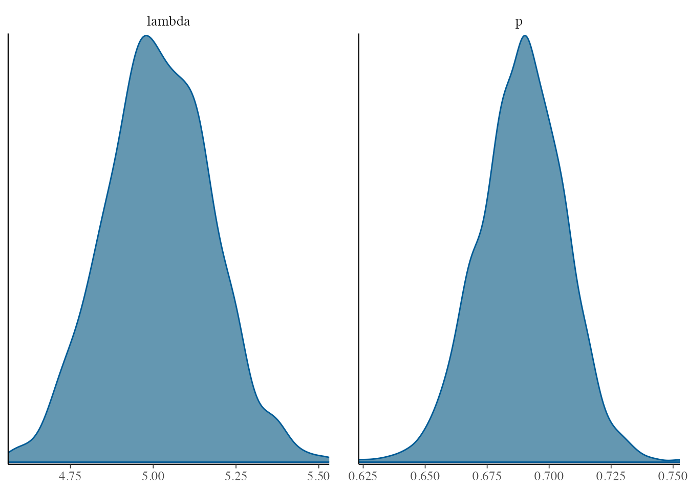
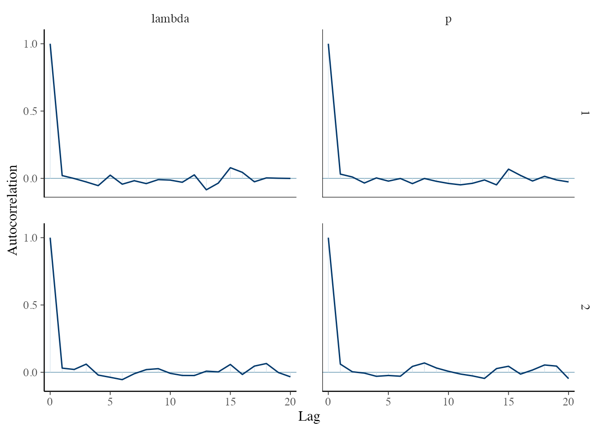
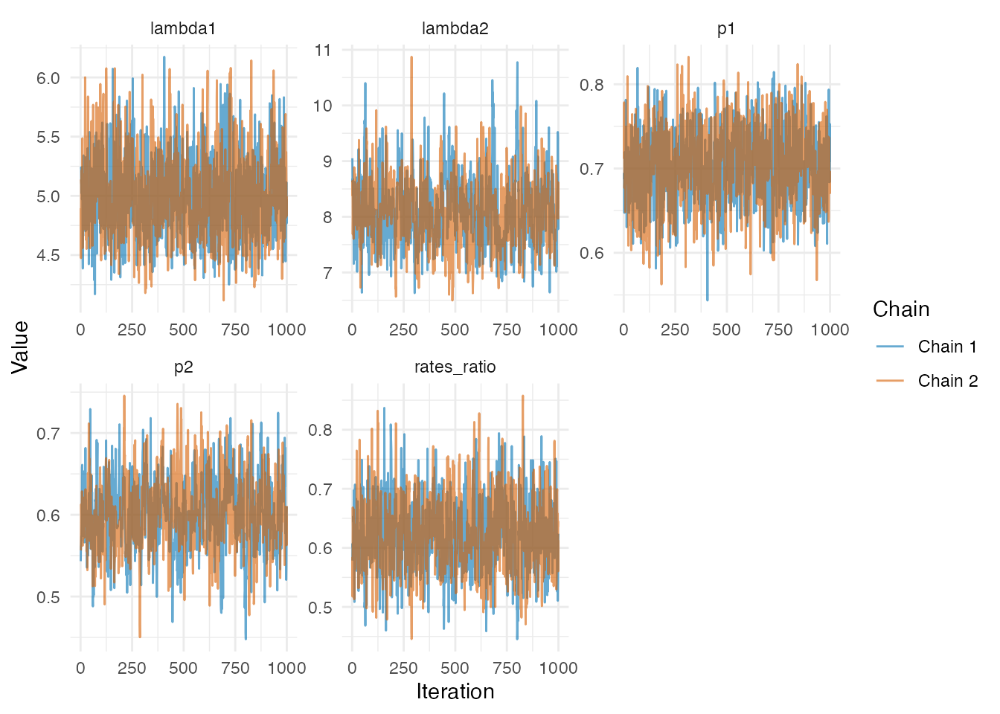

vignette.RmdBUCM (Bayesian Underreported Count Models) is an R package for Bayesian analysis of count data with and without underreporting. The package provides one-sample and two-sample Poisson, zero-inflated Poisson (ZIP), and negative binomial models.
BUCM includes both naive models, which assume no underreporting, and underreported models that account for incomplete reporting. Model estimation is performed using Markov chain Monte Carlo (MCMC) methods through JAGS.
Model comparison is available using DIC, WAIC, and PSIS-LOO.
Install the latest version from Github
As an example, we simulate data from Poisson subject to underreporting. Assume some validation data through which we know the true(latent) event count denoted by where is the expected(true) count.
For all units, the reported count arises from a binomial mechanism. Conditional on the true count , where denotes the reporting probability.
For the remaining units(the main study sample), only the underreported counts are observed. Marginally, we can derived the distribution of as:
set.seed(123)
# Simulation settings
lambda <- 5
p <- 0.7
nv <- 100 # Validation sample size
nobs <- 300 # Non-validation sample size
# Validation sample: latent counts (Y*) and observed counts (Y)
ystar <- rpois(
nv,
lambda = lambda
)
yval <- rbinom(
nv,
size = ystar,
prob = p
)
# Observed counts subject to underreporting
yobs <- rpois(
nobs,
lambda = lambda * p
)Here, ystar contains the true counts in the validation
sample, yval contains the corresponding reported counts
generated through the binomial reporting mechanism, and
yobs contains the observed counts subject to underreporting
in the main study sample.
data.frame(
y = c(ystar, yval, yobs),
type = c(
rep("ystar", nv),
rep("yval", nv),
rep("yobs", nobs)
)
) |>
ggplot() +
geom_bar(aes(y)) +
facet_grid(~ type) +
labs(
x = "Count",
y = "Frequency"
)
With validation data available, prior specifications can be excluded, noninformative, weakly informative or informative.
set.seed(123)
bayes_count_models <- BUCM::urc_mcmc(
x = list(ystar = ystar, yval = yval, yobs = yobs),
prior_p = "dbeta(22, 18)",
prior_lambda = "dgamma(4, 1)",
thresh = 5
)ls(bayes_count_models)
#> [1] "dic_best" "dics" "loo_best" "loos" "models" "waic_best"
#> [7] "waics"BUCM provides extra diagnostics functions urc_trace,
urc_acf, urc_density and
urc_hist. urc_mcmc also returns the plausible
model if using DIC/WAIC/PSIS-LOO as the model selection method. The
likelihoods are also returned for each model allowing users to compute
and diagnose WAIC and PSIS-LOO methods (Take note of warnings for WAIC
and PSIS-LOO computations, see original loo
documentation).


BUCM is compatible with bayesplot package. Pass array of posterior draws to create trace plots, density, posterior intervals and other diagnostic visualizations. The log-likelihoods are monitored for WAIC and PSIS-LOO computations, so you must explicitly specify the parameters; otherwise, log-likelihoods will be included.
jm_poisson_array <- bayes_count_models$models$poisson$BUGSoutput$sims.array
bayesplot::mcmc_dens(jm_poisson_array, pars = c("lambda", "p"))

bayes_count_models$models$poisson |>
BUCM::urc_posterior_summary(exclude = c("mu", "deviance"), digits = 2)
#> mean sd 2.5% 50% 97.5% Rhat n.eff
#> lambda 5.00 0.160 4.70 5.00 5.30 1 2000
#> p 0.69 0.017 0.65 0.69 0.72 1 1884Posterior summaries can also be obtained using
MCMCvis.
# using DIC for model selection
bayes_count_models$dics |>
kableExtra::kable(caption = "DIC Comparison")| model_names | DIC |
|---|---|
| poisson | 1907.629 |
| zip | 1952.435 |
| negbinom | 1913.327 |
# using WAIC for model selection
bayes_count_models$waics |>
kableExtra::kable(caption = "WAIC Comparison")| model_names | waic |
|---|---|
| poisson | 1907.194 |
| zip | 1908.704 |
| negbinom | 1910.693 |
# using PSIS-LOO for model selection
bayes_count_models$loos |>
kableExtra::kable(caption = "PSIS-LOO Comparison")| model_names | loo |
|---|---|
| poisson | 1907.203 |
| zip | 1903.827 |
| negbinom | 1910.701 |
data.frame(
Model = c("DIC", "WAIC", "LOO"),
"Best Selected" = c(
bayes_count_models$dic_best,
bayes_count_models$waic_best,
bayes_count_models$loo_best
)
) |>
kableExtra::kable(caption = "Plausible model by each selection criterion")| Model | Best.Selected |
|---|---|
| DIC | poisson |
| WAIC | poisson |
| LOO | poisson |
Assuming no validation set, we can try informative priors on the parameters
For the two-sample setting, we consider two independent Poisson populations with different underlying mean counts and reporting probabilities. No validation data are assumed to be available, so the model is fitted to the two observed underreported samples using informative priors centered on the values used to generate the data.
set.seed(123)
# Simulation settings
lambda1 <- 5
lambda2 <- 8
p1 <- 0.7
p2 <- 0.6
nobs <- 300 # Non-validation sample size
# Observed counts subject to underreporting
yobs1 <- rpois(
nobs,
lambda = lambda1 * p1
)
yobs2 <- rpois(
nobs,
lambda = lambda2 * p2
)bayes_two_count_models <- BUCM::urc_two_mcmc(
x = list(
yobs1 = yobs1,
yobs2 = yobs2,
ystar1 = NA,
yval1 = NA,
ystar2 = NA,
yval2 = NA
),
prior_p1 = "dbeta(70, 30)",
prior_p2 = "dbeta(60, 40)",
prior_lambda1 = "dgamma(25, 5)",
prior_lambda2 = "dgamma(32, 4)"
)Output is a list similar to urc_mcmc output. All the
steps(diagnostics, model selection and summary) shown above apply.
ls(bayes_two_count_models)
#> [1] "dic_best" "dics" "loo_best" "loos" "models" "waic_best"
#> [7] "waics"
Show plausible model selected as being parsimonious or having the smallest criterion value
data.frame(
Model = c("DIC", "WAIC", "LOO"),
"Best Selected" = c(
bayes_two_count_models$dic_best,
bayes_two_count_models$waic_best,
bayes_two_count_models$loo_best
)
) |>
kableExtra::kable(caption = "Plausible model by each selection criterion")| Model | Best.Selected |
|---|---|
| DIC | poisson |
| WAIC | poisson |
| LOO | zip |
Notice that thresh = 2 is the default and PSIS-LOO identifies the underlying distributions as ZIP. We can inspect the PSIS-LOO values
In this case, it is reasonable to apply the parsimony rule to choose Poisson as the underlying distribution since the PSIS-LOO value is within 4 units of the ZIP value.
See the urc_mcmc_naive() and
urc_two_mcmc_naive documentation for the required of the
naive case which assumes no underreporting.
If you use BUCM in published research, please cite:
Anim Bediako, T., Roberman, J. L., Barth, J., & Stamey, J. D. (2026). BUCM: An R package for Bayesian modeling of one and two sample count models with underreporting.